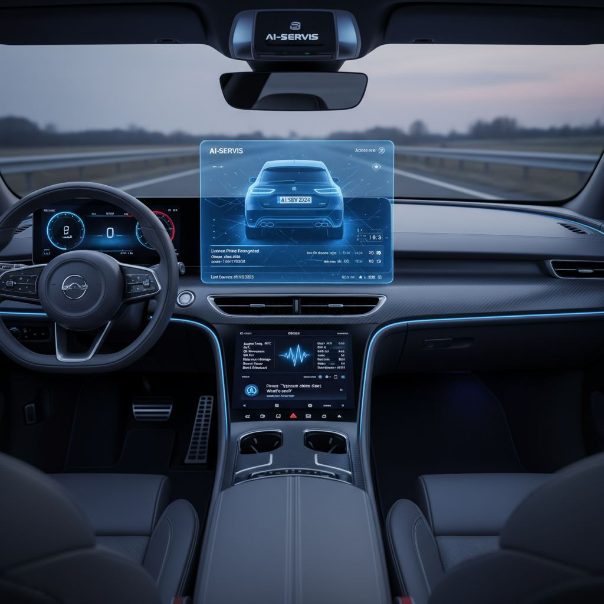

Professional AI solutions for business vehicles with productivity boost and enterprise security
Everything below is implemented and checked by automated tests in CI or in simulation. Bench, hardware and in-vehicle validation is still under way.
Engine speed, coolant temperature, battery voltage and ignition state, from an ELM327 digital twin and passive CAN capture on ESP32.
A VAG/Audi diagnostics bridge that only reads. MIA does not write to the vehicle bus by default.
Plate recognition in the Android app, with a Czech motorway vignette check.
Voice command handling on the Pi and spoken feedback in the Android app.
BLE pairing, a live telemetry card, dashcam recording and a local rules engine.
REST and WebSocket API, ZeroMQ messaging and systemd services, with simulation fallbacks when hardware is absent.
Where the product is heading. These scenarios are not finished or validated yet.
Runs the API, messaging and AI services at the edge, in the car.
Listen on OBD-II and CAN and drive local inputs and outputs.
Dashboard, BLE link, plate recognition and dashcam on the driver's phone.
Requirements, design decisions and validation evidence are public on GitHub.
MIA is looking for pilot users and partners. There is no price list yet. Tell us what you need and we will work out what makes sense.